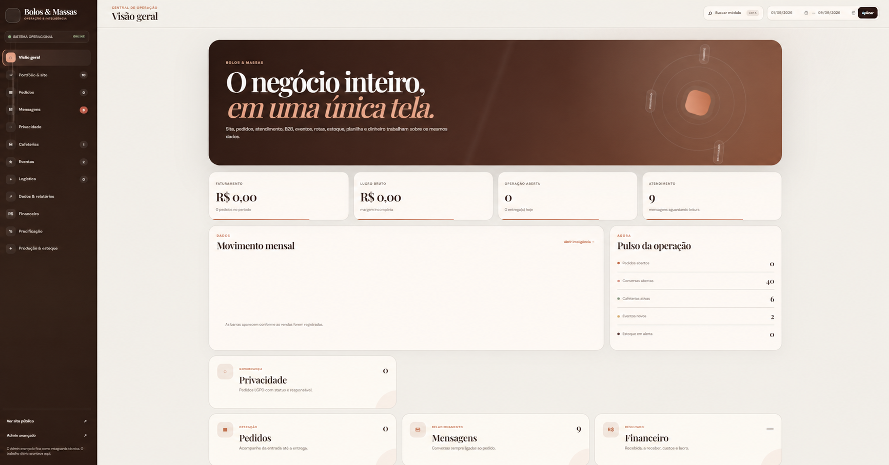
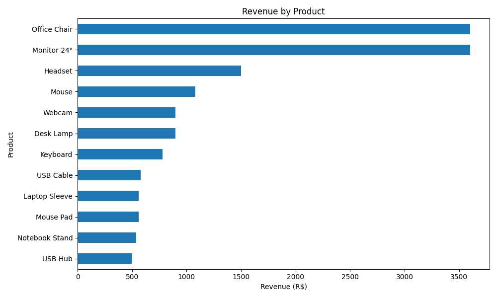

Imagem anonimizada
Imagem anonimizadaGestão financeira
Finance Manager
Uma base de gestão para organizar receitas, despesas, contas e permissões de acesso.
Conheça o que construímos
De um site com a cara da sua marca a ferramentas para organizar o negócio. Explore os projetos pelo que você precisa.
Imagem anonimizadaGestão financeira
Uma base de gestão para organizar receitas, despesas, contas e permissões de acesso.

Site e cardápio para cafeteria
Uma proposta de site com a identidade da cafeteria e um cardápio fácil de explorar.

Catálogo e pedidos para confeitaria
Uma plataforma que reúne catálogo, pedidos e montagem de bolos para uma confeitaria.

Loja e agendamento para pet shop
Produtos, carrinho e agendamento em uma demonstração de experiência para pet shops.
Excel · Fórmulas · Python
Custos, preços e margem
Uma planilha demonstrativa que conecta insumos, receitas, formação de preços e vendas.

Referência visualAgenda e relacionamento com clientes
Protótipo de organização de clientes, agenda, serviços e orçamentos em uma só interface.
TypeScript · Next.js · React
Gestão e treinos para academias
Um projeto para conectar a administração, os professores e os alunos de uma academia.

Saída do projeto com dados de demonstração
Análise de vendas
Um projeto para transformar arquivos de vendas em indicadores, filtros e relatórios.
Python · FastAPI · Pandas
Análise de dados e inteligência artificial
Uma demonstração para explorar dados, identificar padrões e apoiar análises.
Python · FastAPI · SQLAlchemy
Dados aplicados à energia
Uma demonstração de análise e simulação de geração renovável com dados sintéticos.
Projetos, propostas e demonstrações têm estágios diferentes. Cada página explica o que foi construído, as referências visuais e as possibilidades de evolução.
Também estamos construindo
Um novo projeto em Java e Spring Boot, ainda em desenvolvimento.
Acesse os repositórios que compõem esta seleção.
Agenda, clientes, serviços e orçamentos reunidos em um protótipo de interface.
Protótipo frontendQualidade de dados, anomalias, segmentos e previsões em um fluxo de análise explicável.
Demo de portfólioCatálogo, pedidos, montagem de bolos e operação interna em uma plataforma Django.
Em evoluçãoPrevisão e simulação de restrições na geração renovável, com premissas explícitas.
Demo sintéticaAdministração, professores e alunos em um MVP de gestão e acompanhamento de treinos.
MVP em branchModelagem de receitas, despesas, contas e permissões em uma base Django genérica.
Edição pública reduzidaUma planilha integrada de insumos, receitas, precificação e análise comercial.
Demo em ExcelCSV, indicadores, filtros e relatórios em um dashboard de análise de vendas.
Demo de análiseProposta de experiência institucional para cafeteria, com cardápio pesquisável.
Proposta de siteLoja, carrinho e agendamento demonstrativos em uma experiência responsiva.
MVP de interfaceProjeto em Java e Spring Boot, com nova versão em preparação.
Em desenvolvimentoA seleção prioriza projetos com interface, regras de negócio, integração ou análise documentada. Exercícios de cursos e forks ficam fora do portfólio comercial.
Vamos conversar
Conte sua ideia ou o que está dificultando a rotina. A gente ajuda a definir por onde começar.
Primeiro, entendemos. Depois, propomos.